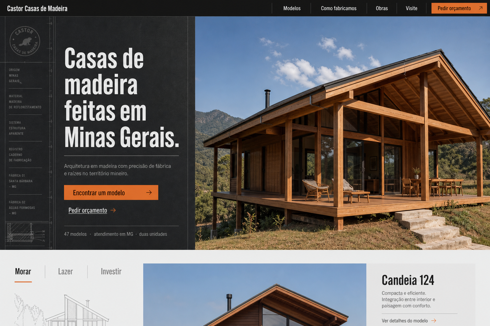
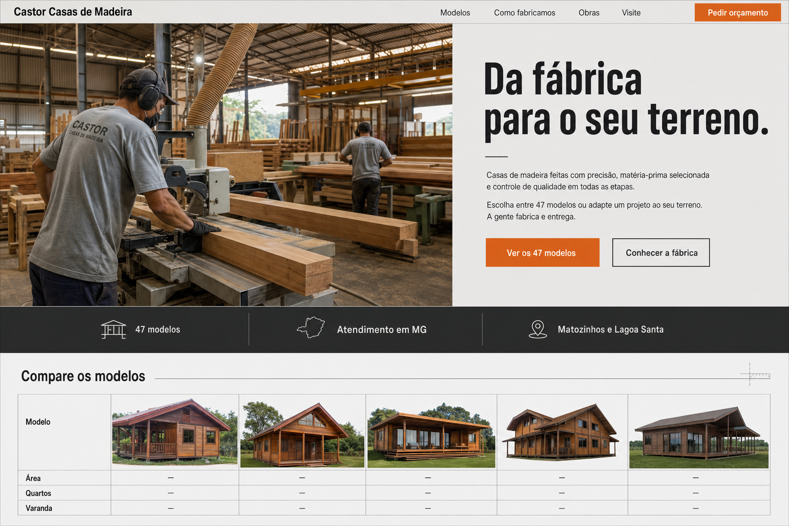
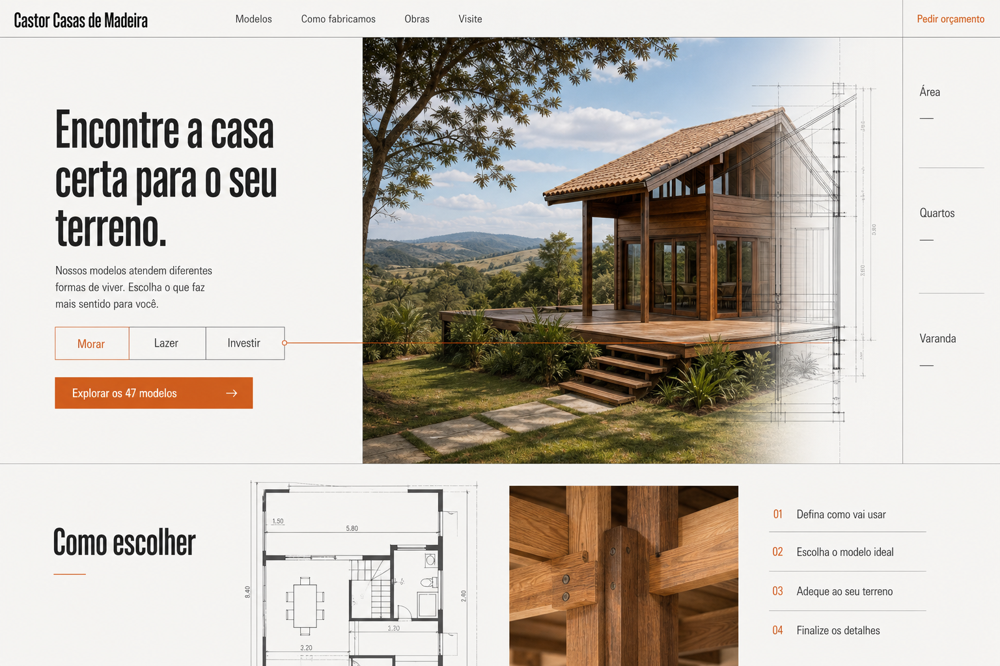

Casa + caderno técnico
Maior impacto visual. A casa domina a página, enquanto a coluna lateral registra origem, material e dados do catálogo.

Fábrica protagonista
A capacidade de fabricação lidera a mensagem. É a composição mais forte para demonstrar processo, equipe e estrutura industrial.

Dossiê do modelo
Melhor equilíbrio entre produto e orientação comercial. O visitante escolhe a finalidade e entra no catálogo sem depender de uma grade genérica de cards.
